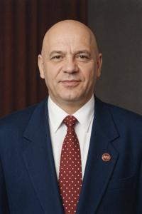
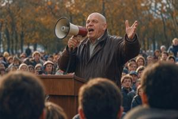

Любован Язвец
{kind=link}

Любован Петров Язвец (згур. Ljubovan Petrov Jazvjec, дегл. Lübovan Petrov Jazvёc, глаг. ⰎⰣⰁⰑⰂⰀⰐ ⰒⰅⰕⰓⰑⰂ ⰡⰈⰂⰟⰜ; 1935-1991) — верхнепаннонский политик. Начав карьеру коммунистического партийного функционера, он после краха социализма быстро перековался в згурского националиста и одного из ведущих политических деятелей эпохи коллапса и распада страны. Безвременная смерть избавила его от участия в гражданской войне, но, возможно, сама по себе ускорила её начало.
Карьера в Народной Республике (1935-1989)
Язвец родился в бедной крестьянской семье (стандартная формулировка в официальных биографиях коммунистов). Семья принадлежала к згурской народности. В годы венгерской оккупации — о чём официальные биографии умалчивали — отец Любована был мобилизован в Венгерскую королевскую армию, воевал на Восточном фронте и пропал без вести в Сталинграде. Дальнейшая биография опять стандартна: сельская школа, срочная служба в рядах Народной освободительной армии, поступление рабочим на стройку во Вроновице, общественный активизм, вступление в Коммунистическую партию Верхней Паннонии (КПВП) в 1959 г., низовая партийная работа в парткоме строительного управления.
В 1965 г. Язвец выступил делегатом от своей парторганизации на XII Съезде КПВП, где его заметил сам Верховный Лидер Северын Гоубка. С этого момента его карьера резко пошла вверх. Злые языки утверждают, что причиной тому была внешность низкорослого, рано облысевшего Язвеца, которую Гоубка якобы находил крайне забавной; говорят, будто при каждой встрече генералиссимус не мог удержаться от улыбки и не упускал случая громко шлёпнуть товарища Язвеца по лысине.
Вероятно, имелись и более веские причины. В 1964 г. произошло очередное (реальное или сфабрикованное) покушение на Гоубку, за которым последовала неизбежная волна репрессий, и на этот раз — крупная чистка верхних и средних эшелонов партийного аппарата. Верховный Лидер избавлялся от старых товарищей времён Второй мировой, заменяя их молодыми выдвиженцами. XII Съезд был в этом отношении поворотным, и карьерный взлёт Язвеца вполне вписывался в общую тенденцию.
Кроме того, Любован, очевидно, обладал некоторым управленческим талантом, потому что должности ему поручались серьёзные: председатель парткома профсоюза строителей, председатель жилищно-строительной секции Вроновицкого горкома, председатель окружного комитета Седьмого округа (в разгар его масштабной застройки) и, наконец, председатель Вроновицкого горкома (1981). Должность партийного руководителя столицы была одной из высших в КПВП и давала место в Политбюро.
В роли столичного мэра Язвец заслужил репутацию делового, прагматичного хозяйственника, умело справляясь с нараставшими проблемами периода медленного развала социалистической экономики. Обладая хорошо подвешенным языком и демократичными манерами, он не боялся импровизированных встреч с народом и умел находчиво отвечать на острые вопросы. Его популярность росла, а с ней и политический вес. После 1985 года в курилках Центрального Комитета всё чаще вполголоса передавали слух, будто бы на XVII Съезде КПВП, намеченном на 1990 год, престарелый Гоубка уйдёт на покой и передаст власть Язвецу, а тот проведёт давно назревшие политические и экономические реформы.
Но в 1988 году вроновицкий председатель угодил в опалу, критически высказавшись о Миляне Гоубке, жене Верховного Лидера, которая якобы «всюду протаскивает своих деглян». Слова были сказаны в узком кругу, но оперативно донесены до генералиссимуса. Язвеца «по состоянию здоровья» немедленно сняли с поста и исключили из Политбюро; возможно, смерть Гоубки 10 ноября 1989 года спасла его от худших последствий.
Крах коммунистического режима (конец 1989)
К тому моменту Язвец располагал солидным политическим капиталом: за ним закрепилась репутация эффективного и популярного мэра, опала у Гоубки играла лишь в плюс, а к репрессиям, цензуре, милитаризации и провальной внешней политике режима он не имел никакого отношения. Дополнительные очки в глазах згурцев приносила и его критика деглянских симпатий Миляны. На следующий день после смерти Гоубки Политбюро собралось на секретное заседание, вернуло Язвеца в свой состав и предложило возглавить партию. Тот отказался, понимая, что корабль КПВП уже тонет. Отказался Язвец и от поста председателя вроновицкого горкома, заявив, что глава города должен избираться гражданами на выборах: он рассчитывал выиграть их самостоятельно и получить мандат более весомый, чем могло бы дать непопулярное Политбюро. Во время беспорядков во Вроновице он лично вышел к разъярённой толпе и сумел её успокоить, предотвратив погромы государственных учреждений. Формально оставаясь членом КПВП, Язвец стремительно превращался в самостоятельного политического игрока, вокруг которого сложилась собственная клика, по большей части из згурцев.
В декабре 1989 года Законодательное Собрание объявило о политической реформе: оно обещало многопартийность, свободу печати, освобождение политзаключённых и подготовку рыночных преобразований, начиная с немедленного разрешения частного предпринимательства. Выборы на многопартийной основе были назначены на октябрь 1990 года, чтобы дать партиям время сформироваться. В те же дни внеочередной XVII Съезд КПВП переименовал партию в Социалистическую и принял программу реформ — демократизацию, переоценку наследия Гоубки и переход к умеренно-рыночной экономике. На том съезде дегляне впервые открыто подняли вопрос о языковых правах и переводе алфавита на бобовицу, встретив сопротивление згурцев, которые настаивали на едином языке и блуховице, — так этнический раскол впервые обозначился на политическом уровне. Язвец ярко выступил на стороне згурцев.
Движение в защиту згурцев (1990-1991)
{kind=link}

В апреле 1990 года прошла предвыборная — первая и последняя — конференция Социалистической партии. Делегаты собрались на фоне нарастающей этнической поляризации и идейного кризиса; рейтинг бывших коммунистов был низок как никогда, демократы, не успев легализоваться, раскололись и неистово грызлись между собой, зато росла популярность радикально-националистического Деглянского Народного Фронта (ДНФ) во главе с харизматичным диссидентом Костой Рачевым. На конференции Язвец заявил: «Мы должны думать не о национальном единстве, которого больше нет, а о защите згурцев», — вызвав гром аплодисментов и негодующий свист.
Партия раскололась натрое: слабеющее интернационалистское ядро — Социалистическая партия за единую Паннонию (СПЕП), Движение в защиту згурцев (Dviga o zabrone zgurcev, ДЗЗ) во главе с самим Язвецом и Деглянская социалистическая партия (ДСП). Программа ДЗЗ требовала преобразования Верхней Паннонии в Згурскую Республику на том основании, что згурцы составляют большинство населения, введения блуховицы как единственного алфавита и формально допускала равные права меньшинств, включая деглян. Печать на бобовице разрешалась, но все деглянские организации подлежали запрету, а об автономии речи не шло. Дополняли программу популистские обещания — остановить инфляцию, покончить с безработицей, провести приватизацию «по справедливости» и вступить в НАТО и ЕС в течение пяти лет.
Неожиданно для всех, включая самого Язвеца, на выборах в октябре ДЗЗ набрало абсолютное большинство в згурских районах и получила 45% мест в парламенте. Деглянские партии — ДНФ и ДСП — шли единым блоком и получили примерно столько же благодаря победе в деглянских районах. СПЕП, не сумевшая отмежеваться от наследия КПВП, в парламент не прошла, а либеральная Паннонская партия демократического обновления (ППДО) набрала около 7%. Язвец возглавил фракцию, почти дотянувшую до большинства, но парламент оказался парализован згуро-деглянским расколом и не смог сформировать правительство: любая коалиция одной из националистических партий с ППДО немедленно вызывала взрыв уличных протестов со стороны националистов противоположного лагеря. Страной управляло «временное техническое правительство» со слабым мандатом, почти не контролировавшее ситуацию, пока экономика рушилась, а государственный аппарат разлагался.
На протяжении 1991 года росло политическое насилие. На местных выборах в уездные, городские и окружные советы в згурских районах победило ДЗЗ; Язвец, контролировавший партийный аппарат и списки, фактически стал правителем згурской половины страны. В деглянских районах аналогичным образом утвердился у власти ДНФ (окончательно слившийся с ДСП), а в районах со смешанным населением — включая все крупные города — обе националистические партии боролись за власть всеми доступными средствами, не особо оглядываясь на закон.
Личная жизнь
Первая жена Язвеца по имени Ярка, ничем не примечательная домохозяйка, родившая ему двух детей, подала на развод сразу после опалы мужа в 1988 году. Очевидно, он поступила так из страха, и вполне обоснованного — две её близкие родственницы угодили в лагеря как жёны врагов народа. Язвец тяжело пережил этот развод — второй жестокий удар судьбы после самой отставки. Он порвал все отношения с бывшей женой и даже не встречался с детьми, несмотря на то, что Ярка попыталась вновь навести мосты после 1989 года. Тот факт, что она была деглянкой, возможно, в какой-то мере подтолкнул политика к переходу на националистические позиции.
В апреле 1990, на старте своей новой карьеры в роли лидера ДЗЗ, Язвец стал встречаться с журналисткой Светаной Йожефовой. Их знакомство началось с агрессивной перепалки в прямом эфире. В сентябре, накануне выборов, они поженились; Светана стала верной политической сподвижницей мужа и с 1991 г. руководила партийными СМИ. Детей у них не было. Любопытно, что обе жены Язвеца были выше среднего роста; возможно, из-за этого он старался рядом с ними не фотографироваться.
Знакомые Язвеца вспоминают его как человека добродушного, несмотря на порой агрессивную риторику, открытого и простого в общении, и притом крайне, почти болезненно, аккуратного, не терпевшего ни малейшего непорядка вокруг себя. В его кабинете не только царила идеальная чистота, но и вещи на столе всегда были разложены симметрично и стройно, как по линейке. В отличие от большинства функционеров КПВП, да и вообще большинства паннонцев, он не курил и практически не пил; как и полагалось порядочному згурцу, болел за «Сокол Вроновица».
Смерть и политическое наследие
28 августа 1991 года Язвец, проводивший отпуск с женой в доме отдыха «Зоржински Дубри», погиб у неё на глазах в результате несчастного случая; подробности см. в статье о Зоржинском туннеле. Неприятели попытались обвинить Светану, единственную свидетельницу смерти, в убийстве мужа, но экспертиза подтвердила её рассказ о несчастном случае. Гибель вождя ДЗЗ вызвала смуту и раздор в партии. Светана попыталась перехватить лидерство, но не имела шансов в условиях нарастающего насилия и превращения партии в военизированную группировку. Останься Язвец жив, он, вероятно, не смог бы остановить этот процесс; но его гибель, безусловно, процесс ускорила.
Хотя Язвец не дожил до провозглашения независимости Згурской Республики, он считается в ней одним из отцов-основателей, тем более почитаемым, что не успел запятнать себя военными преступлениями. Его ответственность за довоенные акты насилия в 1990-1991 гг. — погромы и политические убийства — не доказана. Вероятно, лидер ДЗЗ искренне старался держаться в цивилизованных рамках: требуя беспощадности к деглянским «боевикам и террористам», он осуждал расправы над мирными гражданами. Это не мешает нынешней официальной пропаганде Деглянской Республики считать его архизлодеем, идеологом геноцида и главным виновником гражданской войны.
Категории: Згуро-деглянский конфликт, Персоналии, Политики, Постсоциалистическая эпоха, Социалистическая эпоха